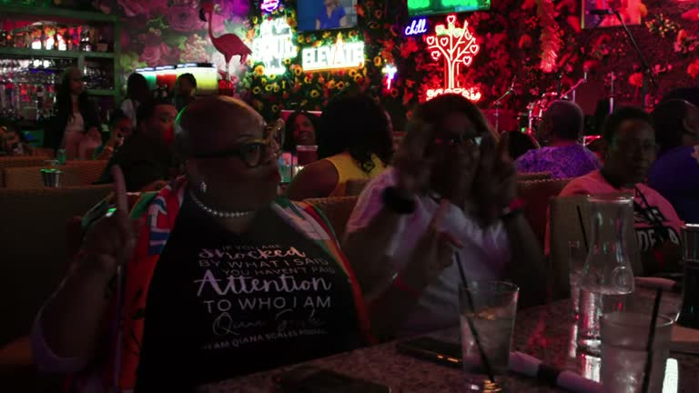
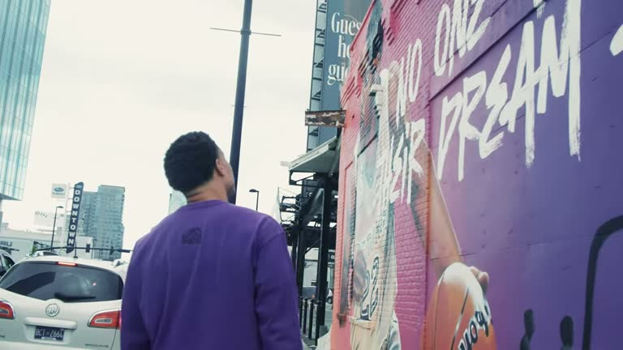
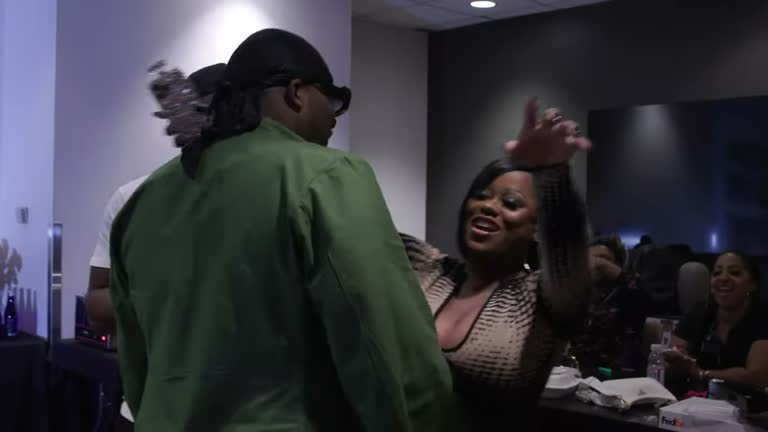
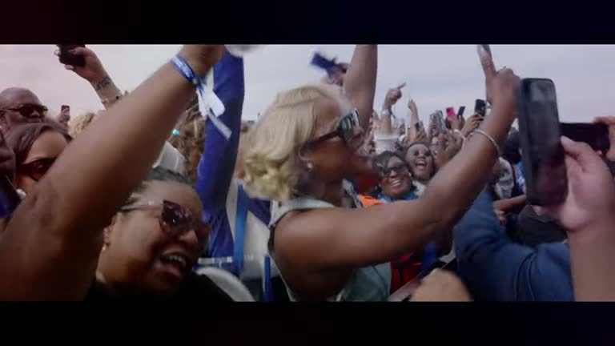
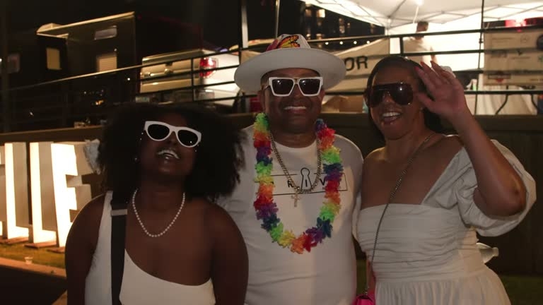
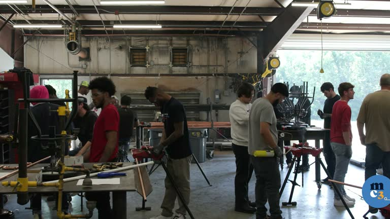

Campaign strategy& management.
Full-service campaign management for candidates and ballot measures: strategy, budgets, staffing, field and media, from Nashville to nationwide races.
At Leo Operations, campaign management is the art and science of guiding a political or business campaign to success. Our approach combines innovative strategies with meticulous planning and execution. We focus on understanding the unique aspects of each campaign, ensuring that every decision is data-driven and targeted. Our team excels in coordinating all facets of the campaign, from initial strategy development to final execution, ensuring a coherent and impactful message across all platforms.
Our campaign management begins with a comprehensive strategic planning phase. We conduct in-depth research to understand the landscape, identify key issues, and define target audiences. This phase culminates in the creation of a detailed campaign plan that outlines clear goals, tactics, timelines, and metrics for success.
Throughout the campaign, we maintain flexibility to adapt strategies as needed, ensuring the campaign remains responsive to changing conditions and opportunities.
We understand that a successful campaign is more than just a sum of its parts. It’s about how different elements – from digital marketing and social media outreach to grassroots organizing and event planning – work together seamlessly. Our team specializes in integrating these components to create a cohesive campaign narrative. We ensure that every aspect of the campaign, whether it’s an online ad, a press release, or a public event, aligns with the overall strategy and message.
In campaign management, ongoing analysis and optimization are key. We continuously monitor campaign performance against established metrics, using real-time data to make informed decisions. This approach allows us to fine-tune strategies, allocate resources effectively, and maximize the impact of the campaign. Our goal is to not only meet but exceed the expectations of our clients, delivering results that truly make a difference.
By choosing Leo Operations for campaign management, you are partnering with a team that is dedicated to your success. We bring expertise, innovation, and unwavering commitment to every campaign we manage, ensuring that your message resonates with your audience and achieves the desired impact.
The fullplaybook.
See itin motion.






Everythingunder one roof.
Campaign Strategy & Management
The plan, the budget, the team and the daily discipline that turns a candidate into a winner.
→Explore02Field Organizing & Canvassing
Precinct-level plans, door-knocking and GOTV from a team that has knocked 650,000+ doors.
→Explore03Video & Photo Production
Commercials, documentaries, event films and portraits that make people feel something.
→Explore04Website Design & Development
Cinematic, fast, mobile-first sites for campaigns, nonprofits and brands, built to convert.
→Explore05Social Media & Digital Ads
Content, graphics and paid media across Instagram, Facebook, TikTok, X and streaming.
→Explore06Event Photography
1,000+ events and counting: galas, swearing-ins, kickoffs, courtrooms and homecomings.
→ExploreReady towin?
Tell us what you’re running for, building or launching. We’ll tell you how we make people remember it.
Email Leo Operations →